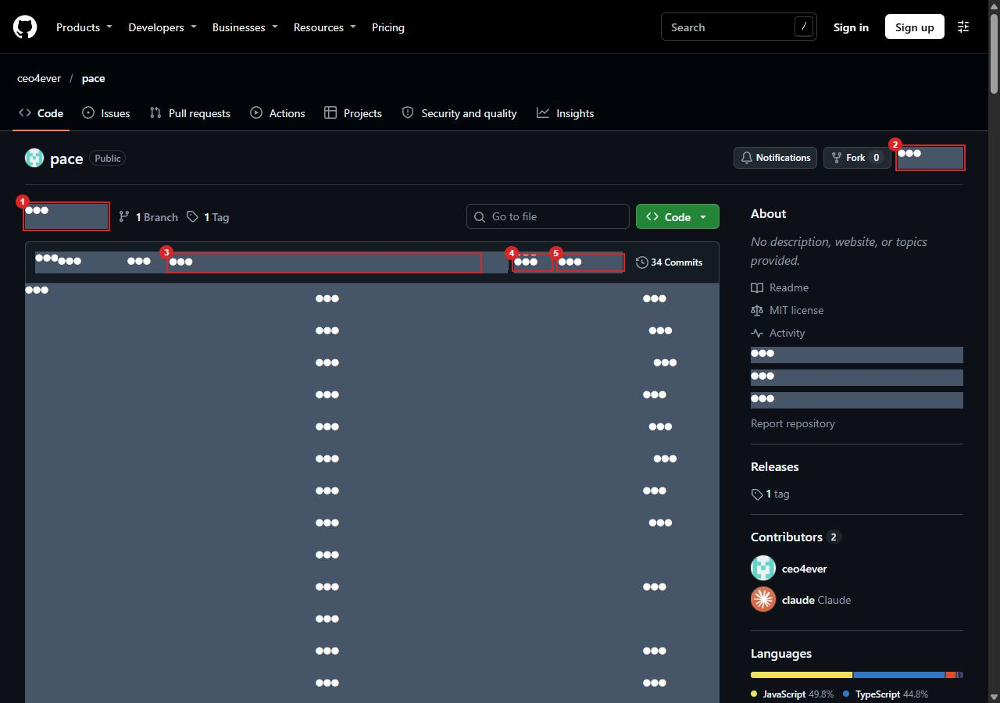

공개 GitHub 저장소 페이지에서 기본 브랜치·별 개수·최신 커밋(해시 앞 7자·제목·날짜)을 읽어 표로 낸다
공개 GitHub 저장소 페이지에서 기본 브랜치·별 개수·최신 커밋(해시 앞 7자·제목·날짜)을 읽어 표로 낸다
UI 변경 시 처리
규칙
S02 저장소 요약 읽기 읽기
- 목적
- 기본 브랜치·별 개수·최신 커밋을 화면에서 읽는다
- 실행 도구
orca— orca 명령 세 가지면 된다(도움말 불필요): 열기는 enter, 읽기는 command 한 번(다섯 값을 JSON으로 — 값이 null이면 그 요소가 없는 것이니 멈추고 보고), 닫기 `orca tab close --page <page>`. 제목이 화면에서 줄었으면 command의 식이 펼침 단추로 전체 제목을 읽는다
명령:orca eval --page <page> --expression "(async()=>{const q=s=>document.querySelector(s);const vis=e=>e.getBoundingClientRect().height>0;const H='[data-testid=latest-commit-html]';const all=()=>[...document.querySelectorAll(H)].filter(vis).map(e=>e.textContent.trim());let t=all()[0]||null;if(t&&t.endsWith('…')){const b=q('[data-testid=latest-commit-details-toggle]');if(b&&b.getAttribute('aria-expanded')!=='true')b.click();let c=null;for(let i=0;i<20&&!c;i++){c=all().find(x=>x.startsWith('…'));if(!c)await new Promise(r=>setTimeout(r,150));}t=c?t.slice(0,-1)+c.slice(1).split('\n')[0]:null;}const a=q('[data-testid=latest-commit-details] a[href*=commit]');const rt=q('[data-testid=latest-commit-details] relative-time');const st=q('[data-testid=star-button]');return JSON.stringify({path:location.pathname,branch:(q('#ref-picker-repos-header-ref-selector')||{}).innerText||null,stars:st?((st.innerText.match(/\(([^)]+)\)/)||[])[1]||null):null,sha7:a?a.textContent.trim():null,title:t,date:rt?(rt.getAttribute('datetime')||'').slice(0,10):null});})()"- 진입 조건
- 공개 저장소 첫 화면이 열려 있다 — 열기: `orca tab create --url https://github.com/<owner/repo> --json`(출력 result.browserPageId가 이후 <page>)
- 화면 식별(하나라도 다르면 UI 변경)
- 제목: 저장소 첫 화면
- 최신 커밋 줄이 보인다
- 별(Star) 단추가 보인다

기준 화면 · 확인일 2026-11-16 · captured
실행(번호 = 캡처 태그)
| # | 요소 | 찾기 | 동작 | 대기 | 기대 | 다르면 |
|---|---|---|---|---|---|---|
| 1 | 기본 브랜치 | #ref-picker-repos-header-ref-selector | 읽기 | 없음 | 브랜치 이름이 보인다 | 멈춘다 |
| 2 | 별 개수 | [data-testid="star-button"] | 읽기 | 없음 | Star 옆에 개수가 보인다(예 124k) | 멈춘다 |
| 3 | 최신 커밋 제목 | [data-testid="latest-commit-html"] | 읽기 | 없음 | 비어 있지 않다 | 멈춘다 |
| 4 | 최신 커밋 링크 | [data-testid="latest-commit-details"] a[href*="/commit/"] | 읽기 | 없음 | 링크 글자가 7자 해시다 | 멈춘다 |
| 5 | 최신 커밋 날짜 | [data-testid="latest-commit-details"] relative-time | 읽기 | 없음 | datetime 속성(UTC 시각)이 있다 | 멈춘다 |
- 성공 판정·주의
- 다섯 값이 모두 읽힌다
- 에스컬레이트
- 선택자가 하나라도 없다 — 화면이 바뀐 것이다
UI 변경 이력
| 날짜 | 단계 | 내용 |
|---|---|---|
| 변경 없음 | ||